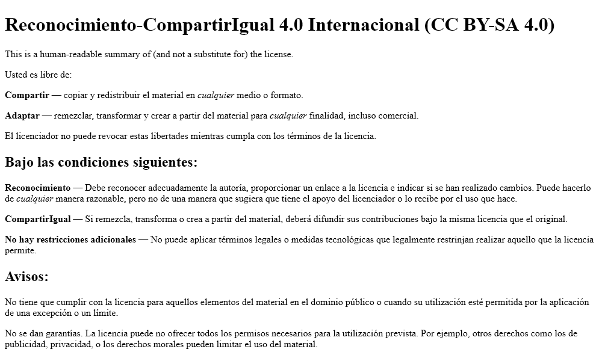
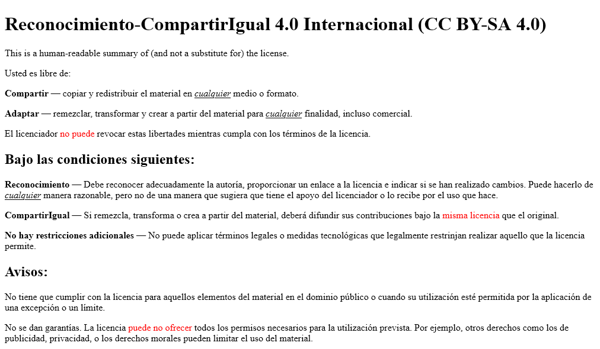
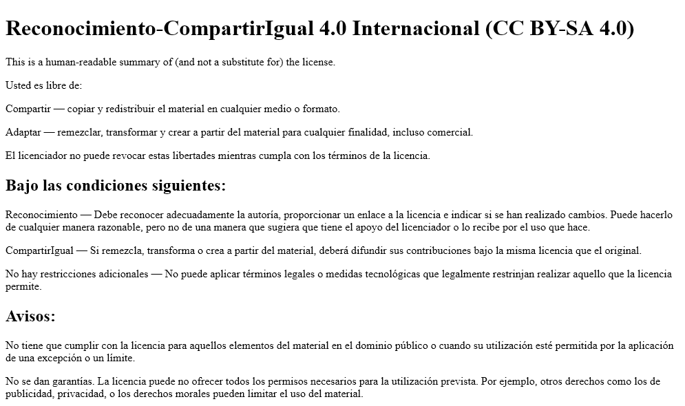
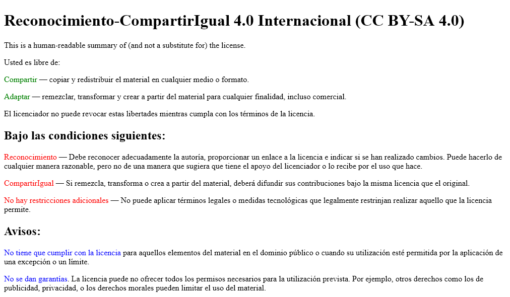
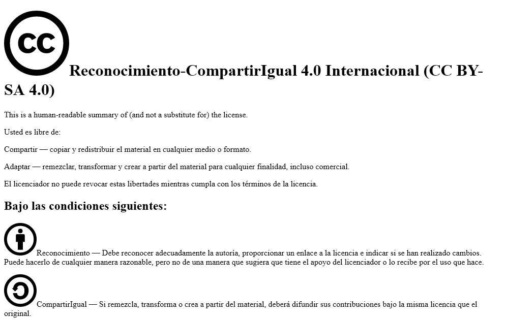
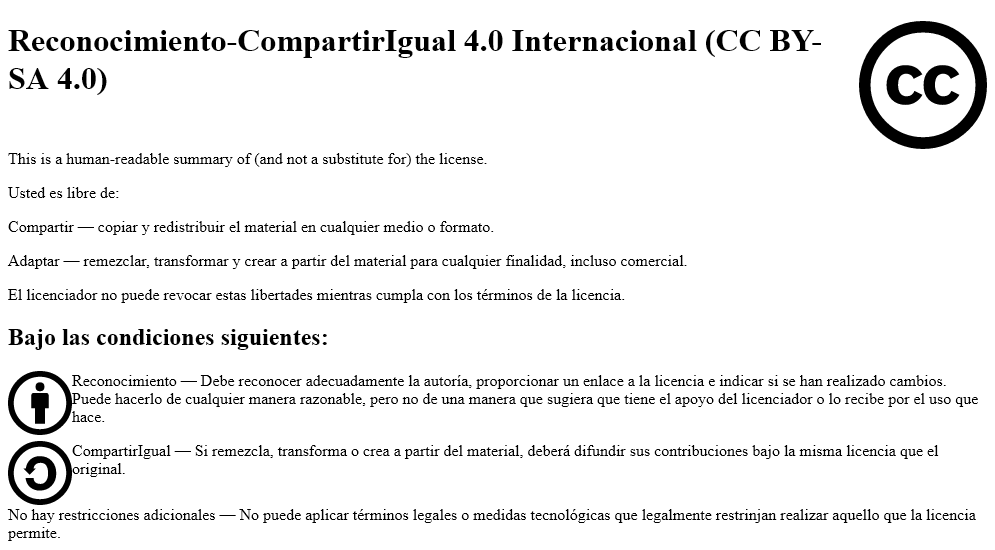
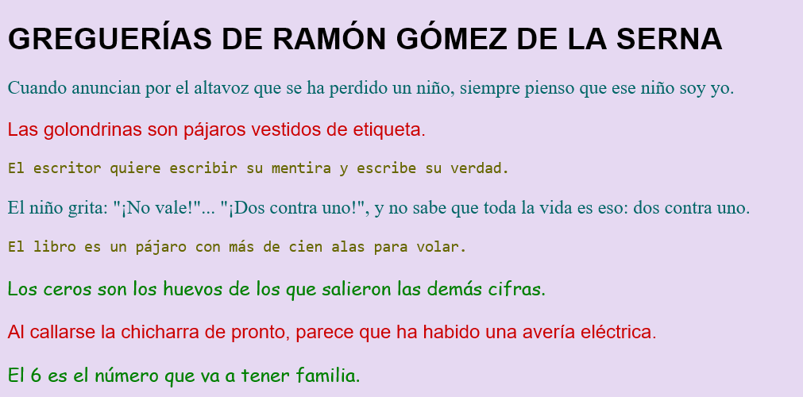
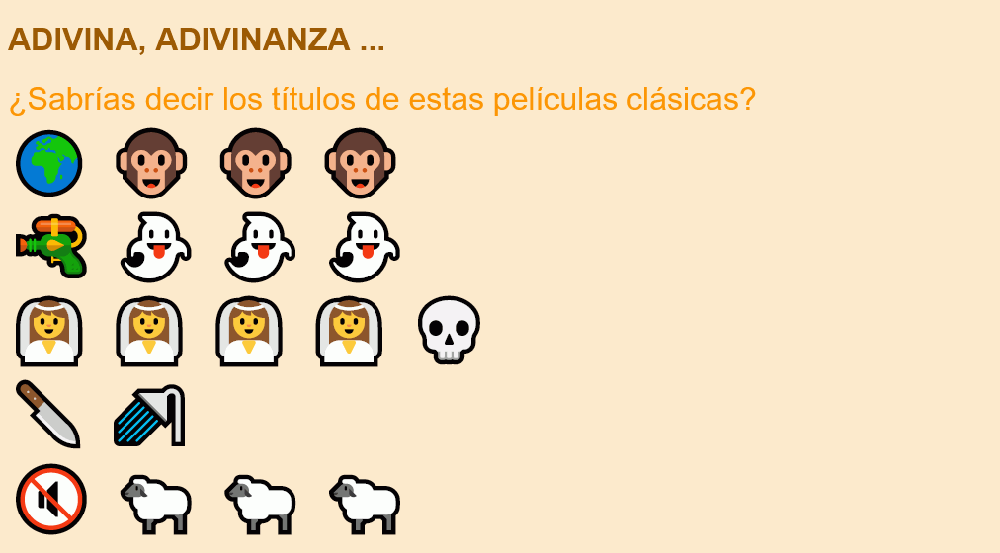

Estos ejercicios tratan sobre los temas tratados en la Semana 3 del curso.
Para facilitar la realización de los ejercicios, se proporcionan unas plantillas de los ejercicios S3. Una vez descargado el fichero zip:
Descomprima las plantillas en la carpeta ejercicios. Se creará una carpeta s3-plantillas.
Renombre la carpeta s3-plantillas como s3.
Las capturas de pantalla están tomadas con un ancho de ventana de 1024px aproximadamente.
⚠️ En algunos aspectos, no es necesario que el resultado sea absolutamente exacto, sobre todo porque algunos detalles no tienen importancia. Por ejemplo, basta con que la ventana del navegador sea un poco más ancha o estrecha para que las palabras salten de una línea a la siguiente. Los valores de tamaños y distancias utilizados suelen ser valores "redondos", pero acertar el valor exacto puede necesitar varios intentos. Con que el parecido sea razonable, es suficiente. Otros aspectos sí que me gustaría que fueran idénticos, por ejemplo los tipos de letra, la posición de las imágenes o qué palabras se han resaltado.
S3 1 - Texto en línea
Abra en Visual Studio Code la página texto-en-linea.html.
Añada las etiquetas strong, em y span a partir de las capturas siguientes:
Ayuda (haga clic aquí si no se le ocurre cómo hacerlo)
En la vista sin estilo, la etiqueta strong se ve en negrita.
En la vista sin estilo, la etiqueta em se ve en cursiva.
En la vista sin estilo, la etiqueta span no se identifica, ya que el navegador no le asigna ningún estilo predeterminado.
Vista sin estilo:

Vista con estilo:

Cree la hoja de estilo texto-en-linea.css
Añada las reglas en la hoja de estilo de manera que al abrir la página web en un navegador el contenido se vea como en la captura con estilo anterior.
Nota: Color empleado:
red.
S3 2 - Clases
Abra en Visual Studio Code la página clases.html.
Añada las etiquetas con clases a partir de las capturas siguientes:
Ayuda (haga clic aquí si no se le ocurre cómo hacerlo)
Los fragmentos en color llevarán etiquetas span ya que en la vista sin estilo, el navegador no les asigna ningún estilo predeterminado.
Asigne clases (atributos class) a cada etiqueta span dependiendo del resultado deseado en cada una. Intente elegir un nombre de clase que no esté asociado al resultado visual (el color), sino a la categoría del texto correspondiente.
Vista sin estilo:

Vista con estilo:

Cree la hoja de estilo clases.css
Añada las reglas en la hoja de estilo de manera que al abrir la página web en un navegador el contenido se vea como en la captura con estilo anterior.
Convierta la imagen JPG a un tamaño más reducido manteniendo el formato JPG utilizando Squoosh (para crear imágenes JPEG, Squoosh utilzia el codificador MozJPEG).
Convierta la imagen JPG al formato WebP utilizando Squoosh.
Convierta la imagen JPG al formato AVIF utilizando Squoosh.
Guarde las cuatro imágenes en la carpeta s3-3.
S3 4 - Imágenes flotantes
Abra en Visual Studio Code la página imagenes-flotantes.html.
Añada las etiquetas de imagen en los lugares adecuados a partir de la captura siguiente:
Ayuda (haga clic aquí si no se le ocurre cómo hacerlo)
Las imágenes deben colocarse al principio del bloque con el que la imagen vaya a quedar alineada, independientemente de que la imagen vaya a quedar a la izquierda o a la derecha.
La vista sin estilo permite saber más fácilmente la posición de las imágenes.
Vista sin estilo:

Vista con estilo:

Cree la hoja de estilo imagenes-flotantes.css
Añada las reglas en la hoja de estilo de manera que al abrir la página web en un navegador el contenido se vea como en la captura con estilo anterior.
S3 5 - Fuentes
Abra en Visual Studio Code la página fuentes.html.
Añada las clases a las etiquetas de párrafo a partir de la captura siguiente:
Ayuda (haga clic aquí si no se le ocurre cómo hacerlo)
Los párrafos con el mismo estilo tendrán la misma clase.
Asigne clases (atributos class) a cada etiqueta p dependiendo del resultado deseado en cada una. Intente elegir un nombre de clase que no esté asociado al resultado visual (el color o el tipo de letra), sino a la categoría del texto correspondiente.
Vista con estilo:

Cree la hoja de estilo fuentes.css
Añada las sentencias en la hoja de estilo de manera que al abrir la página web en un navegador el contenido se vea como en la captura con estilo anterior.
Añada las reglas en la hoja de estilo de manera que al abrir la página web en un navegador el contenido se vea como en la captura con estilo siguiente.
Ayuda (haga clic aquí si no se le ocurre cómo hacerlo)
Utilice clases para distinguir el párrafo de texto con la pregunta de los párrafos con los emojis, ya que el tamaño de fuente es distinto en cada caso. Como se comenta en la lección sobre Clases se pueden crear dos clases (una para el texto y otra para los emojis) o crear una sola clase (la del texto) y la propiedad que tendríamos que poner en la clase de los emojis ponerla en la regla de los párrafos sin clase.
Vista con estilo:

⚠️ Un problema con los emojis es que para verlos bien normalmente hay que ampliar su tamaño y al ampliar el font-size del párrafo, la separación entre párrafos se hace muy grande. Una solución es eliminar la separación entre párrafos con la propiedad margin que veremos en detalle la semana que viene. En este ejercicio puede añadir la siguiente regla: